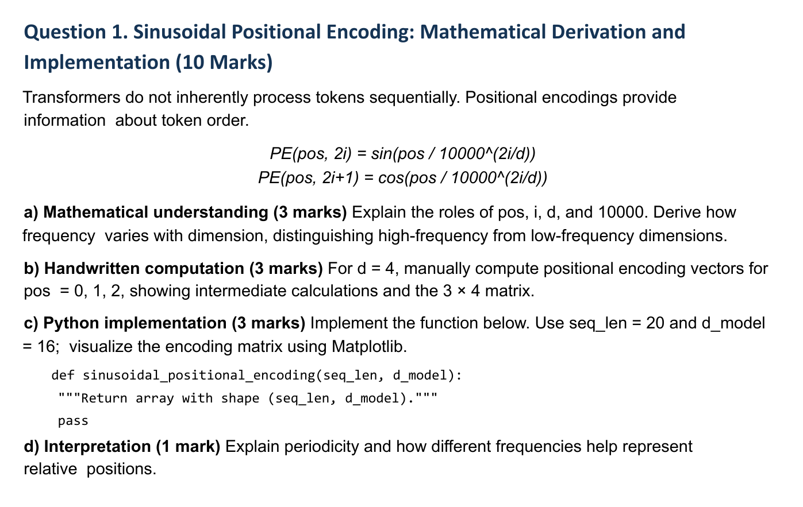
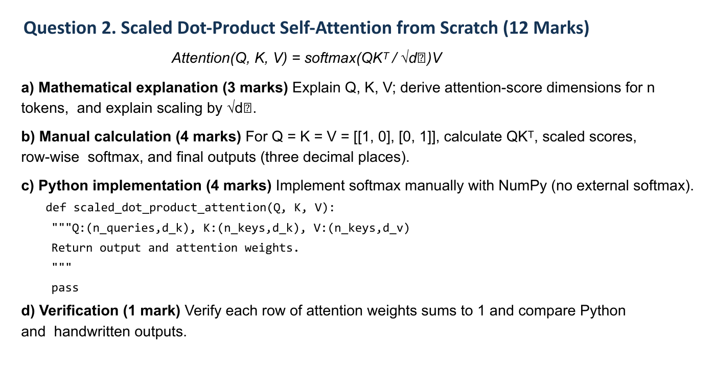
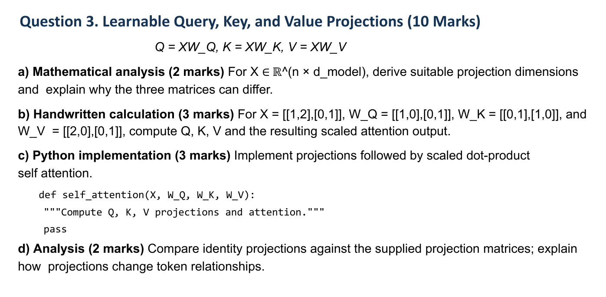
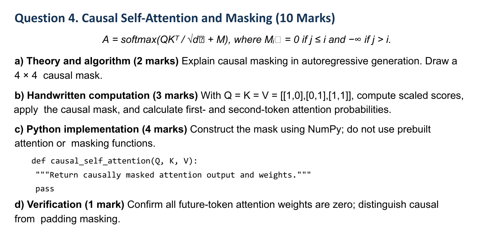
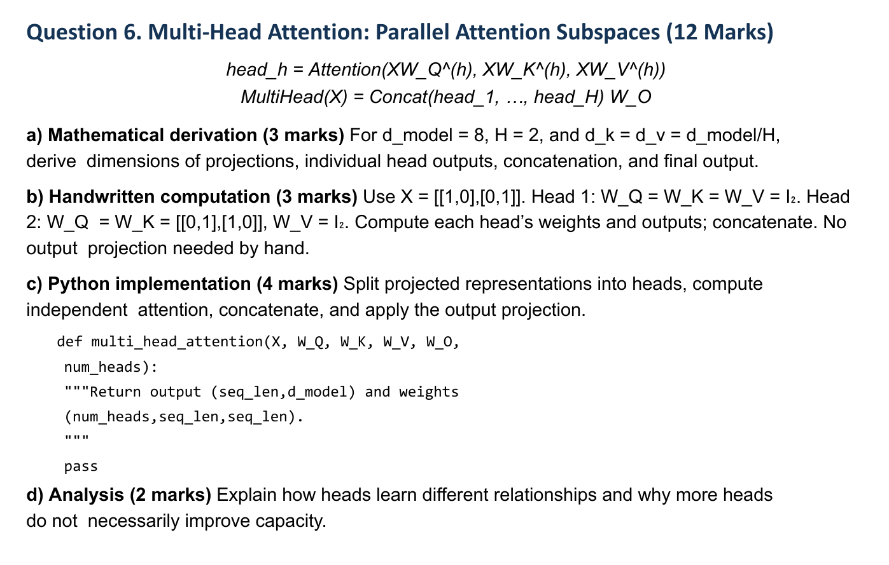
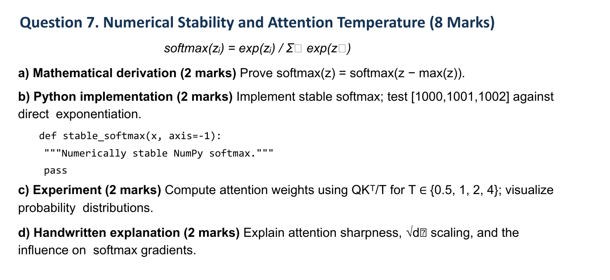
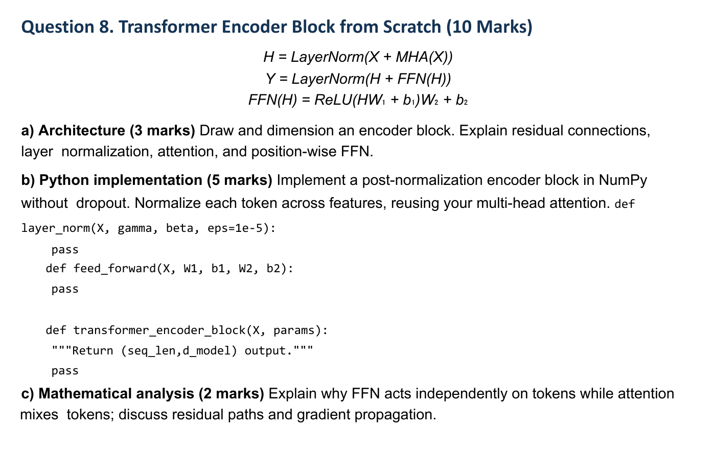
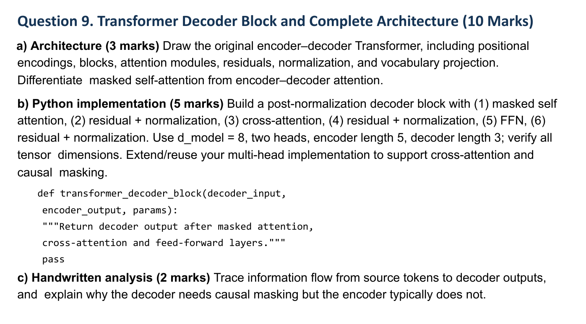
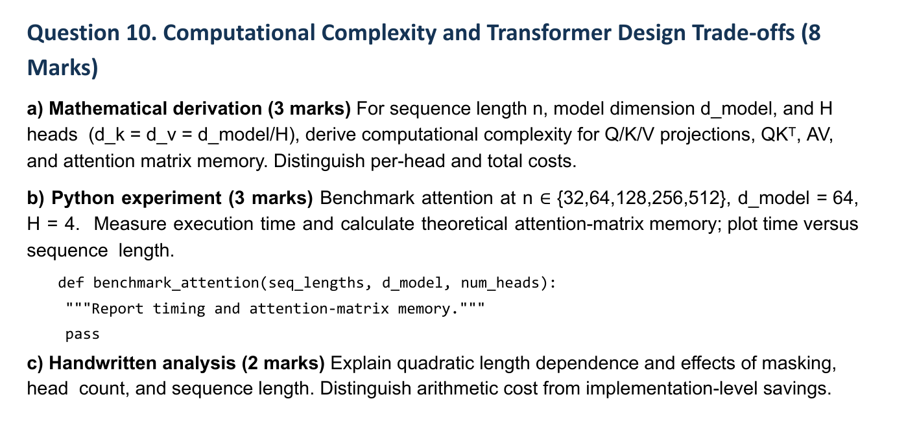

DON'T COPY THIS BOX. Copy everything else, top to bottom, including the name header.
Calculator in RADIANS. Keep 4 decimals while working, round the final answer to 3 decimals once.
Boxed lines = draw a box around them. Dashed "DRAW" boxes = draw the diagram yourself with a ruler (simple boxes and arrows).
Question boxes and striped "FIGURE" boxes = rule an EMPTY box of exactly the size written on it and leave it blank. The question snapshot or the plot gets pasted in after you scan. They are printed at real size. "Python ✓" = write it as shown; it means the notebook checked that value.
Q1Sinusoidal Positional Encoding
Question box · rule an empty box 16 × 10.1 cm · the question is pasted in after scanning, so don't copy its text

(a) Roles of pos, i, d, 10000 and how frequency varies
attention has no sense of order, so each position gets a unique vector of sines and cosines, added to the word embedding.
pos = position of the word in the sequence: 0, 1, 2, …
i = index of the sin/cos pair, 0 … d/2 − 1. Dimension 2i holds sin, dimension 2i+1 holds cos.
d = d_model, the length of each embedding vector.
10000 = base that sets the slowest wavelength (about 2π · 10000), so positions never repeat in practice.
Notebook: sinusoidal_positional_encoding(20, 16) returns a 20 × 16 matrix, shown as a heatmap.
FIGURE 1
rule an empty box 16 × 5.2 cm
positional-encoding heatmap, pasted in after scanning
Left columns (fast pairs) flip colour almost every row; right columns (slow pairs) barely change down all 20 positions.
(d) Periodicity and relative position
Each pair is periodic with wavelength λi. Mixing many wavelengths gives every position a unique code, like the hands of a clock.
For an offset k: [sin ω(p+k), cos ω(p+k)]ᵀ = R(ωk) · [sin ωp, cos ωp]ᵀ,
where R(ωk) =
cos ωk
sin ωk
−sin ωk
cos ωk
R depends only on k, not on p, so "k positions later" is one fixed linear map everywhere. The model can learn relative offsets. Python ✓ (all p, all pairs)
Q2Scaled Dot-Product Self-Attention
Question box · rule an empty box 16 × 8.3 cm · the question is pasted in after scanning, so don't copy its text

(a) Q, K, V, score dimensions, and scaling by √dk
Q (query) = what a token is looking for. K (key) = what each token offers to be matched on. V (value) = the information a token passes on.
Dimensions for n tokens: Q (n × dk) · Kᵀ (dk × n) = QKᵀ (n × n); row i = scores of token i against every token. Softmax keeps n × n; then (n × n) · V (n × dv) = output (n × dv).
Derivation (why divide by √dk):dot products grow with dk; dividing by √dk brings their spread back to 1.
Step 1 Assume the components of q and k are independent, mean 0, variance 1.
Step 2 q · k = Σj=1..dk qjkj; each term has mean 0, variance 1.
Step 3 Var(q · k) = dk → std = √dk
Step 4 Var(q · k / √dk) = dk / dk = 1
Without scaling, large dk → huge scores → softmax saturates (one weight ≈ 1) → gradients ≈ 0 (Q7d).
Algorithm: scaled dot-product attention
S = QKᵀ (n × n)
S ← S / √dk
A = softmax of each row of S (each row sums to 1)
Output = A V (n × dv)
(b) Hand computation: Q = K = V = I₂
Given Q = K = V =
1
0
0
1
, dk = 2, √2 = 1.4142
Step 1 QKᵀ = I · I =
1
0
0
1
Step 2 ÷ √2:
0.7071
0
0
0.7071
Step 3 row 1: e0.7071 = 2.0281, e0 = 1, sum = 3.0281 → 2.0281/3.0281 = 0.6698, 1/3.0281 = 0.3302. Row 2 is the mirror image.
Step 4 output = A · V = A · I = A
A = Output =
0.670
0.330
0.330
0.670
Python ✓
(d) Verification
Each row: 0.670 + 0.330 = 1.000 ✓. Python gives the same weights and output to 3 d.p. ✓
Q3Learnable Q, K, V Projections
Question box · rule an empty box 16 × 7.8 cm · the question is pasted in after scanning, so don't copy its text

(a) Projection dimensions, and why three matrices
X ∈ ℝn × d_model; WQ, WK ∈ ℝd_model × dk; WV ∈ ℝd_model × dv
Q = XWQ (n × dk), K = XWK (n × dk), V = XWV (n × dv). Q and K must share dk (QKᵀ needs matching inner size); dv is free.
Three roles: asking (Q), being matched (K), carrying content (V). Separate matrices let each role use different features. If WQ = WK, scores would be forced symmetric (sij = sji).
(d) Identity projections vs the supplied projections
Step 1 Identity: Q = K = V = X → QKᵀ = XXᵀ =
5
2
2
1
→ ÷√2 =
3.5355
1.4142
1.4142
0.7071
Step 2 A 2-entry softmax depends only on the difference: row 1: 3.5355 − 1.4142 = 2.1213 = 2.8284 − 0.7071; row 2: 1.4142 − 0.7071 = 0.7071 = 0.7071 − 0 → same weights as (b).
Step 3 Why: sij(identity) − sij(supplied) = (xi1 − xi2)(xj1 − xj2) = (−1)(−1) = 1 for every i, j: each row shifts by a constant, and softmax(z + c) = softmax(z) (Q7a).
Step 4 Outputs differ: identity A·X =
0.893
1.893
0.670
1.670
vs supplied
1.786
1.893
1.340
1.670
. WV doubled the first value feature.
Here WK shifts each score row by a constant, so who attends to whom is unchanged; only WV changes what is passed on.
In general WQ, WK reshape which tokens match (a random WK changes the weights, Python ✓) and WV reshapes the retrieved information.
Q4Causal Self-Attention and Masking
Question box · rule an empty box 16 × 7.9 cm · the question is pasted in after scanning, so don't copy its text

(a) Causal masking in autoregressive generation
Autoregressive generation predicts token t from tokens 1 … t − 1 only. In training the whole sentence is fed at once, so position i must not see positions j > i, or it would copy the answer.
Mask Mij = 0 if j ≤ i, −∞ if j > i, added to the scores before softmax. e−∞ = 0, so future weights are exactly 0.
Draw: 4 × 4 causal mask
query ↓ key →
1
2
3
4
1
0
−∞
−∞
−∞
2
0
0
−∞
−∞
3
0
0
0
−∞
4
0
0
0
0
Shade the −∞ triangle (above the diagonal).
Algorithm: causal self-attention
S = QKᵀ / √dk (n × n)
Build M by comparing positions: −∞ where j > i, else 0
S′ = S + M
A = softmax of each row of S′ (future weights = 0)
Output = A V
(b) Hand computation: Q = K = V = [[1,0],[0,1],[1,1]]
(d) Retrieval, and why the matrix need not be square
The decoder query is a search request and the encoder keys are index entries. The weights pick the relevant source tokens (40% / 20% / 40%), and the output retrieves a mix of their values.
Weights are n × m: one row per decoder token, one column per source token. Two different sequences of different lengths, so 1 × 3 here and 3 × 5 in the notebook. Each row still sums to 1.
Q6Multi-Head Attention
Question box · rule an empty box 16 × 10.2 cm · the question is pasted in after scanning, so don't copy its text

(a) Dimensions: d_model = 8, H = 2, dk = dv = 8/2 = 4
quantity
shape
X
n × 8
WQ, WK, WV
8 × 8 each (= 2 heads × 4 columns)
Q, K, V → per head
n × 8 → n × 4
scores / weights per head
n × n
head output AhVh
n × 4
concat [head 1 | head 2]
n × 8
WO → final output
8 × 8 → n × 8
all weights
2 × n × n
Algorithm: multi-head attention
Project: Q = XWQ, K = XWK, V = XWV
Split the columns into H heads of dk
Each head: Ah = softmax(QhKhᵀ / √dk), outh = AhVh
Concatenate the heads side by side (n × H·dv)
Output = concat · WO
(b) Hand computation: X = I₂, two heads
Given X = I₂; head 1: WQ = WK = WV = I₂; head 2: WQ = WK = P =
0
1
1
0
, WV = I₂; each head dk = 2
Step 1 Head 1: Q = K = V = I₂, exactly Q2(b) → A₁ =
0.670
0.330
0.330
0.670
, out₁ = A₁
Step 2 Head 2: Q = K = XP = P → QKᵀ = PPᵀ = I (swapping twice = no swap) → same scores → A₂ = A₁; V = I₂ → out₂ = A₂
Step 3 concatenate side by side (2 × 4)
concat =
0.670
0.330
0.670
0.330
0.330
0.670
0.330
0.670
Python ✓
The concat is 2 × 4 but d_model = 2: WO (4 × 2) maps it back. The two heads are identical, so they are redundant.
(d) Different relationships, and why more heads ≠ more capacity
Each head has its own WQ(h), WK(h), WV(h), so each defines its own notion of "match" (e.g. syntax, nearby words, coreference).
Fixed budget: H · dk = d_model, so the parameters stay 4 · d_model² for any H.
Thinner heads: rank(QhKhᵀ) ≤ dk = d_model / H, so each head can express fewer patterns. Python ✓ (rank 8, 4, 2, 1)
Redundancy: heads can learn the same pattern (our toy: head 2 = head 1); many trained heads can be removed with little loss.
Q7Numerical Stability and Attention Temperature
Question box · rule an empty box 16 × 7.4 cm · the question is pasted in after scanning, so don't copy its text

(a) Proof: softmax(z) = softmax(z − max z)
subtracting any constant c from every score leaves softmax unchanged, so we may subtract the max to avoid overflow.
Step 3 saturated (one s ≈ 1, the rest ≈ 0): every si(δij − sj) ≈ 0 → the gradient vanishes
Too sharp → no gradient, no learning. Too flat → no focus. √dk keeps softmax in the useful middle.
Notebook: largest gradient entry 0.223 for scores [2, 1, 0], but only about 8 × 10⁻⁹ for [20, 1, 0].
Q8Transformer Encoder Block
Question box · rule an empty box 16 × 10.1 cm · the question is pasted in after scanning, so don't copy its text

(a) Architecture
Draw: encoder block (about half a page). Label every box; write the shape on the arrows.
Must show: X in, MHA, 2 × Add & LayerNorm, FFN with d_ff, 2 residual arrows, Y out, n × d on the arrows.
Multi-head attention mixes information across tokens: n × d → n × d.
Residual X + MHA(X) keeps the original signal and gives the gradient a direct path.
LayerNorm, per token across its d features: x̂ = (x − μ) / √(σ² + ε), y = γ x̂ + β.
Position-wise FFN: ReLU(HW₁ + b₁)W₂ + b₂, W₁: d × d_ff, W₂: d_ff × d (d_ff usually 4d), the same for every token.
The shape stays n × d throughout, so blocks can be stacked N times.
Algorithm: encoder block (post-norm)
A = MultiHead(X)
H = LayerNorm(X + A)
F = ReLU(HW₁ + b₁)W₂ + b₂
Y = LayerNorm(H + F)
(c) FFN vs attention; residuals and gradients
FFN acts per token: row i of FFN(H) uses only row i of H (same W₁, W₂ on every row), so tokens never mix. Attention mixes tokens: output row i = Σj aij vj depends on every token. Python ✓ (change token 2: FFN row 2 only, attention every row)
Residuals: y = x + F(x) → ∂y/∂x = I + ∂F/∂x. The identity term carries the gradient straight through every layer, so it does not vanish even when ∂F/∂x is small. This is what lets deep stacks train (unlike the repeated multiplications of an RNN).
Q9Decoder Block and Complete Transformer
Question box · rule an empty box 16 × 8.9 cm · the question is pasted in after scanning, so don't copy its text

(a) Architecture
Draw: the full Transformer (one full page). Simple boxes and arrows.
Must show: PE on both sides · ×N on both stacks · encoder: MHA, FFN · decoder: masked MHA, cross-attention, FFN ·
Add & Norm after every sub-layer (2 encoder, 3 decoder) with residual arrows · encoder output → K, V of the cross-attention in every decoder block · Linear → Softmax over the vocabulary.
Masked self-attention: Q, K, V all from the decoder's own tokens, with a causal mask so position i sees only positions ≤ i. Weights n × n.
Encoder–decoder (cross) attention: Q from the decoder, K and V from the encoder output, with no causal mask (the source is fully known). Weights n × m.
Algorithm: decoder block (post-norm)
A = MaskedMultiHead(Yin); H₁ = LayerNorm(Yin + A)
C = CrossMultiHead(Q from H₁; K, V from the encoder output); H₂ = LayerNorm(H₁ + C)
F = FFN(H₂); out = LayerNorm(H₂ + F)
After the last block: logits = out · Wvocab, p = softmax(logits)
(c) Information flow, and why only the decoder is masked
Flow: source tokens → embedding + PE → N encoder blocks → encoder output (m × d) → K, V in the cross-attention of every decoder block → decoder output (n × d) → Linear (d → vocabulary) → softmax → next-token probabilities.
Decoder needs the causal mask: it generates left to right. At inference, token t + 1 does not exist yet when token t is produced, so training must hide it too, or the model attends to the answer it should predict. Python ✓ (no future leak)
Encoder does not: the whole source sentence is given in advance, so every token may use full left and right context.
Q10Computational Complexity
Question box · rule an empty box 16 × 7.7 cm · the question is pasted in after scanning, so don't copy its text

(a) Derivation of the costs (multiply-adds)
count the multiply-adds in each matrix product: attention grows with n², the projections only with n.
Rule (a × b)(b × c) costs a · b · c multiply-adds: a·c entries, each a dot product of length b.
operation
one head (dk = dv = d/H)
all H heads
Q, K, V projections
3 · n · d · dk
3 · n · d²
QKᵀ: (n × dk)(dk × n)
n² · dk
n² · d
AV: (n × n)(n × dv)
n² · dv
n² · d
attention-matrix memory
n²
H · n²
Projections (+ WO) ≈ 4nd² = O(n·d²), linear in n. Attention ≈ 2n²d = O(n²·d), quadratic in n. Memory O(H·n²). Equal when n = 2d.
(b) Benchmark: d_model = 64, H = 4, n = 32 … 512
Notebook: multi-head attention timed for each n (median of 9 runs); memory from H · n² · 8 bytes.
n
32
64
128
256
512
attention memory
32 KiB
128 KiB
512 KiB
2 MiB
8 MiB
FIGURE 3
rule an empty box 16 × 5.5 cm
time vs sequence length, pasted in after scanning
The time curve starts gentle and steepens after n = 128, just as (a) predicts.
(c) Quadratic growth, and arithmetic vs implementation
Quadratic: every one of n tokens scores against all n, so n² pairs. Doubling n gives 4× the work and memory. The table in (b): 16× longer text → 256× the memory.
Sequence length: below n = 2d (= 128 here) the projections dominate, so time grows slower than n². Above it, n² takes over and the measured slope rises towards 2.
Masking: the causal mask zeroes half the matrix, but naive code still computes all n² scores, so no arithmetic is saved. Only a smarter implementation skips the masked half.
Heads: H · dk = d keeps the arithmetic the same, but H separate n × n matrices are stored, so memory is H · n².
Arithmetic vs implementation: the formula counts operations. Real time also depends on overhead at small n, memory traffic at large n, and special kernels that skip masked blocks or never store the full n × n matrix. These save time or memory without changing the arithmetic.